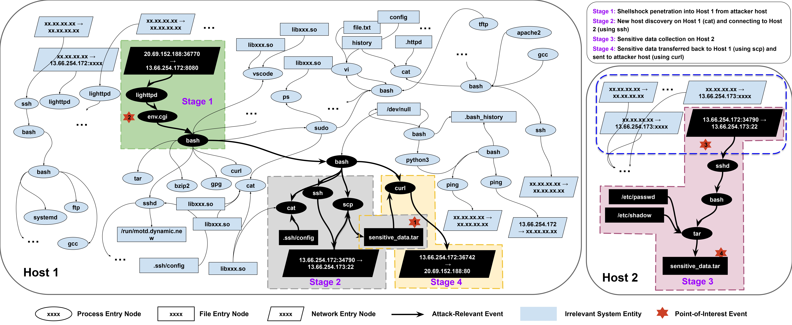
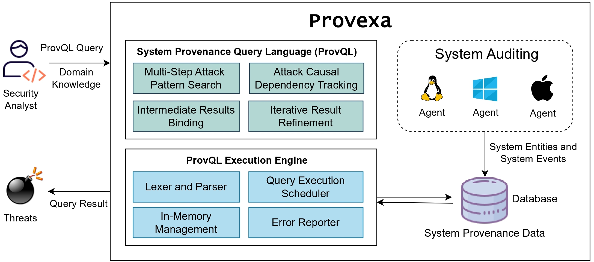

Sophisticated cyberattacks like APTs unfold over multiple hosts and stages, often blending into normal activity. Traditional forensic tools fail to cope due to:
Provexa solves this. Suppose an analyst starts with an alert involving suspicious data transfer. Instead of a bloated graph with 150,000+ edges, Provexa guides them to just the 20 attack-relevant steps by:
curl reading a tar file and writing to a network socket).ping).The result: a dramatic reduction in search space (up to 58,000×) and much higher accuracy than traditional tools. Provexa supports real-world workflows that adapt to evolving attacks, enabling fast, focused, and explainable investigations.

Provexa is a human-in-the-loop investigation platform designed to uncover sophisticated, multi-stage cyberattacks by analyzing massive volumes of system audit data. At its core lies ProvQL, a powerful domain-specific language tailored for security analysts working over system provenance graphs.
The architecture comprises lightweight system agents that collect OS-level events (file, process, and network interactions), which are then parsed and stored in graph or relational databases. These events are transformed into provenance graphs where nodes represent system entities and edges represent causal event relationships.
Analysts interact with Provexa via a notebook-style UI that enables constructing queries, visualizing results, and progressively refining hypotheses. Two core primitives support investigation:
The domain-aware query engine intelligently schedules subqueries for optimized performance, and an in-memory management supports fast, iterative analysis. This architecture empowers analysts to stay focused on what matters — surfacing relevant attack behaviors without wading through irrelevant noise.
For more details on attack scenarios, example queries, and experimental results, check our full appendix page:
View Full Appendix →@misc{yang2024enablingefficientattackinvestigation,
title={Enabling Efficient Attack Investigation via Human-in-the-Loop Security Analysis},
author={Saimon Amanuel Tsegai and Xinyu Yang and Haoyuan Liu and Peng Gao},
year={2024},
eprint={2211.05403},
archivePrefix={arXiv},
primaryClass={cs.CR},
url={https://arxiv.org/abs/2211.05403},
}